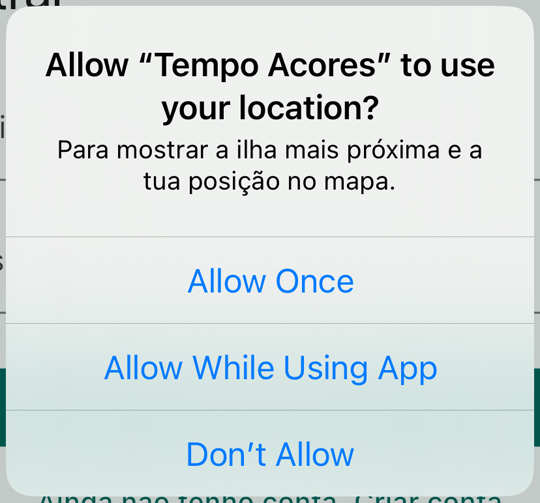

Lesson 21 · Week 10 · Monday, 9 November 2026 · 16:00 to 18:00
Workshop: location, maps and permissions
Theory: where the phone's position comes from, what it costs in battery, permissions and the four possible answers, and a map made of tiles. One game on what the person answers. Practice in two steps in Tempo Açores: "Onde estou?" (where am I?) and the nearest island. The map with a pin per island is for whoever has time, and it goes into the group's project in the sprint.
By the end of this lesson you can
- Explain where the phone's position comes from (GPS, Wi-Fi and cell towers) and why more accuracy costs more battery.
- Ask for the location permission at the right moment and handle the four answers, including "never again".
- Calculate the distance to each island and say which one is the nearest.
- Explain how a map is built from OpenStreetMap tiles and what it costs to show one.
- Choose between Google Maps, Apple Maps and OpenStreetMap, and say what each one costs.
After the tap on "Onde estou?"
May I know? The real dialog and the four answers


- On iOS, the reason comes from
Info.plist(NSLocationWhenInUseUsageDescription). Without it, the dialog does not even appear. - "Never again": on iOS one refusal is enough; on Android it takes two. After that, only in the settings.
Where am I? Three sources, three errors
- GPS: the most accurate, but it needs open sky and uses more battery.
- Wi-Fi: the networks around you, compared with a catalogue. Works indoors.
- Cell towers: almost no battery, but it only knows the neighbourhood.
- The app does not choose the source: it asks for an accuracy. Here
LocationAccuracy.mediumis enough. - With a 15 second
timeLimit, the card says "Sem sinal. Tenta perto de uma janela." - Something that moves asks for a stream:
getPositionStream().
How do I show it? A map is tiles

6/27/24.png
10/434/392.png
16/27813/25127.png- Each tile is a 256 px image, fetched from
tile.openstreetmap.org/{z}/{x}/{y}.png: zoom, column and row. The app only asks for the ones on screen. flutter_mapdraws them in Dart: the same in Chrome, Android and iOS. Changing provider means changing the address.- The "© OpenStreetMap" attribution is always visible on the map.
Which map? Two questions
- Free does not mean no rules: with OpenStreetMap, the attribution stays visible and the app identifies itself (
userAgentPackageName). Bulk downloading tiles is forbidden.
For the tests
- The app asks for an accuracy; the system chooses and combines the sources.
- Ask for the lowest accuracy the use case can take: high accuracy is GPS, and GPS is battery.
- Start with the "while in use" permission, and approximate if that is enough; "always" and "precise" are separate, later requests.
- An app handles four cases: granted, denied, denied forever and service off.
- Background location only for core features, declared to the stores and with the person seeing it happen. Geofencing is done by the system, saves battery and has minutes of delay.
- A web or mobile map is made of 256 px tiles, requested by zoom level, column and row.
- OSM is free but has usage rules and mandatory attribution; Google Maps requires a key and a billing account even when it does not charge.
Game: what does the person answer?
One scenario at a time, everyone at the same time. Vote, discuss with the person next to you, vote again.
What does the person answer? The class
Today, in the app


- Ask for the permission and handle the four answers: the position appears on the card.
- Measure the distance to each island and keep the shortest.
- If there is time: a pin with the name on each island of the map; a tap opens the island's sheet.
- On the
passo-4branch: the "A minha posição" (my position) button takes the map to you.
Getting started: today's repository
git clone https://github.com/Tiago-Rocha/pdm-aula-21.git
cd pdm-aula-21
flutter pub get- Run the app, all on one line:
flutter run -d chrome --dart-define=CLIENT_ID=... --dart-define=CLIENT_SECRET=.... TheclientIdandclientSecretare the ones in issue #1 of yourpdm-miniprojeto, or your group's. - Log in with your account. Above the list there is a new card with the Onde estou? button. Tap it: "Sem a tua posição não há ilha mais próxima" (without your position there is no nearest island). That is the starting point.
- In the top bar there is a new button, the map. Open it: the Azores in tiles, with nine small pins without names.
Today you work on the comments TODO 1 and TODO 2; TODO 3 if there is time. Open a second terminal for the git commands. In Chrome, the permission dialog is the browser's own; to test again, click the padlock next to the address and reset the permission.
1. May I know where you are?
check() of LocationService./// What the phone answered when the app asked for the position.
enum LocationStatus { ready, serviceOff, denied, deniedForever }LocationNotifiercallscheck()and, if the answer isready, asks for the position. For each other answer it has a sentence ready for the card.geolocatortalks to the system:isLocationServiceEnabled(is the service on?),checkPermission(what did it answer last time?) andrequestPermission(the dialog).
Step 1: the four answers
/// Asks for permission, if needed, and says which answer came back.
Future<LocationStatus> check() async {
if (!await Geolocator.isLocationServiceEnabled()) {
return LocationStatus.serviceOff; // off for every app, not just ours
}
var permission = await Geolocator.checkPermission();
if (permission == LocationPermission.denied) {
permission = await Geolocator.requestPermission(); // the dialog
}
return switch (permission) {
LocationPermission.whileInUse ||
LocationPermission.always => LocationStatus.ready,
LocationPermission.deniedForever => LocationStatus.deniedForever,
_ => LocationStatus.denied,
};
}check(): first the service, then the permission, and at the end the switch that translates the system's answer into ours.In the app: tap "Onde estou?". Chrome asks; accept, and the card says "Estás em 37.74, -25.67". Reset the permission at the padlock, refuse, and the card says "Sem permissão. Muda isso nas definições" (no permission, change it in the settings). Nothing crashes. In Chrome, refusing counts as "never again" straight away; on the phone, the first refusal is only "not now".
requestPermission() only called when the previous answer was denied?2. The nearest island
double distanceTo(Position position, Island island) {
return Geolocator.distanceBetween(
position.latitude,
position.longitude,
island.latitude,
island.longitude,
);
}distanceBetweenreturns metres in a straight line over the sphere. It is not distance by road; to know the island, it is enough.- Each
Islandnow bringslatitudeandlongitudefrom the API: the centre of the island. - The result is a record,
({Island island, double metres}): two values at once, without creating a class.
Step 2: measure and keep the shortest
git stash -u
git checkout passo-1
flutter pub get/// Measures the distance to every island; the shortest wins.
Nearest nearestIsland(Position position, List<Island> islands) {
var best = islands.first;
var shortest = double.infinity;
for (final island in islands) {
final metres = distanceTo(position, island);
if (metres < shortest) {
shortest = metres;
best = island;
}
}
return (island: best, metres: shortest);
}nearest = nearestIsland(found, islands);In the app: tap "Onde estou?". The card now says "Estás a 16 km de São Miguel" (you are 16 km from São Miguel).
3. If there is time: a pin per island
FlutterMap is a stack of layers. The pin is a normal widget attached to a latitude and longitude.children: [
TileLayer(
urlTemplate: 'https://tile.openstreetmap.org/{z}/{x}/{y}.png',
userAgentPackageName: 'pt.uac.tempo_acores',
),
MarkerLayer(
markers: [
for (final island in islands) _marker(context, island),
if (position != null) _mePin(position),
],
),
const RichAttributionWidget(
alignment: AttributionAlignment.bottomLeft, // the button is right
attributions: [TextSourceAttribution('OpenStreetMap contributors')],
),
],Step 3: a pin with the name
git stash -u
git checkout passo-2
flutter pub getimport '../widgets/island_sheet.dart';
/// A pin with the name; a tap opens the sheet.
Marker _marker(BuildContext context, Island island) {
final theme = Theme.of(context);
return Marker(
point: LatLng(island.latitude, island.longitude),
width: 110,
height: 56,
child: GestureDetector(
onTap: () => showIslandSheet(context, island),
child: Column(
mainAxisSize: MainAxisSize.min,
children: [
Icon(Icons.place, size: 32, color: theme.colorScheme.primary),
Text(island.name, style: theme.textTheme.labelSmall),
],
),
),
);
}_marker: a GestureDetector with a Column inside, the icon on top and the name below. The sheet, showIslandSheet, is already done in widgets/island_sheet.dart.In the app: nine pins with names. Tap one: the sheet opens with the photo and, if you have already tapped "Onde estou?", the distance to you. Zoom in on the central group to separate the five islands.
Step 4, on the branch: my position on the map
git stash -u
git checkout passo-3
flutter pub get/// Asks for the position and moves the map there.
Future<void> _goToMe() async {
final location = context.read<LocationNotifier>();
await location.locate(context.read<ForecastNotifier>().islands);
if (!mounted) return; // the person may have left the screen
final position = location.position;
if (position == null) {
ScaffoldMessenger.of(context)
.showSnackBar(SnackBar(content: Text(location.message)));
return;
}
// the red pin is already there: the screen watches the notifier
_controller.move(LatLng(position.latitude, position.longitude), 9);
}_goToMe. Ask LocationNotifier for the position, the same one as the card, and move the camera there with the MapController.In the app: tap the round button. The map centres on you, with a red pin. If the permission is denied, the card's sentence appears at the bottom.
Where we got to
check()asks for the permission and translates the four answers (step 1).nearestIslandmeasures and keeps the shortest; the notifier stores it (step 2).- A pin per island, with the name and the sheet (step 3).
- "A minha posição" asks the notifier and moves the camera (step 4).
The passo-4 branch is the final state. The location/ folder, LocationNotifier, the card, the sheet and MapScreen go to the group's project as they are.
For the project: the Map tab
- In the group's project:
flutter pub add geolocator flutter_map latlong2. Then the permissions inAndroidManifest.xmland the sentence inInfo.plist, copied from today's repository. - Copy
lib/location/,lib/state/location_notifier.dart,lib/widgets/nearest_card.dart,lib/widgets/island_sheet.dartandlib/screens/map_screen.dart. YourIslandneedslatitudeandlongitude, as inlib/models/island.dart. RegisterLocationNotifierinmain.dart, as in today's. - With the project's
go_router: a/maparoute and a "Mapa" destination in theNavigationBar, instead of the button in the bar. The card goes to the home screen. - One PR per group, with a reviewer. The definition of done: it runs on the phone, a denied permission does not crash the app, and the OSM attribution is visible.
See you tomorrow
Tomorrow
- Tuesday, 10 November, 08:30 to 10:30: sprint 2 on the project. The Map tab is the first task.
- Bring the group's app running on the phone and today's repository at step 2, at least.
- Today's final state stays on the
passo-4branch:git stash -uand thengit checkout passo-4.
For anyone who wants to read more
- geolocator: accuracy by platform, the errors of each method and what each system requires.
- Location permissions on Android: precise vs approximate, in use vs background, what changed in each version.
- Requesting authorization to use location services: Apple's rules for "when in use" and "always".
- flutter_map: layers, pins, attribution and tile providers.
- Tile usage policy of OpenStreetMap: the rules for the public tiles.